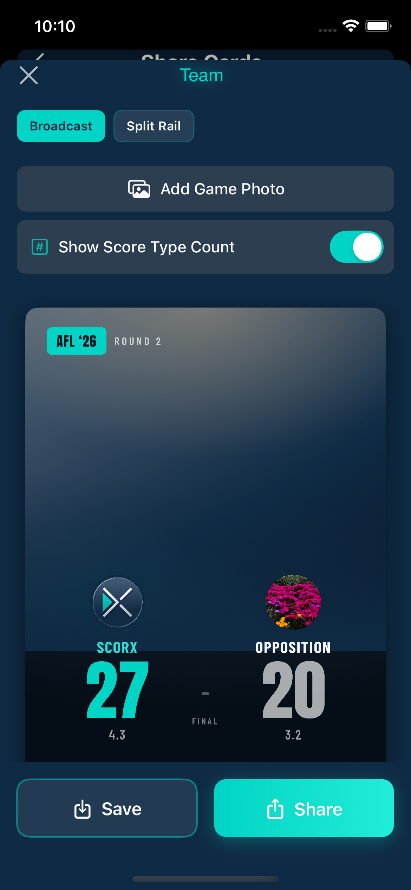
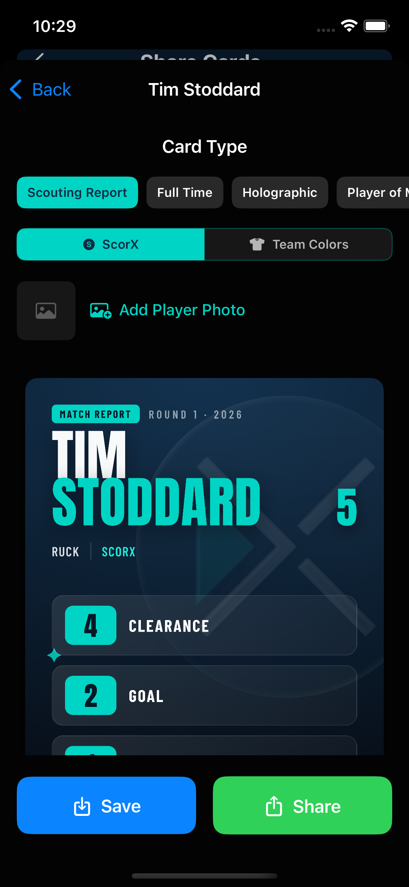
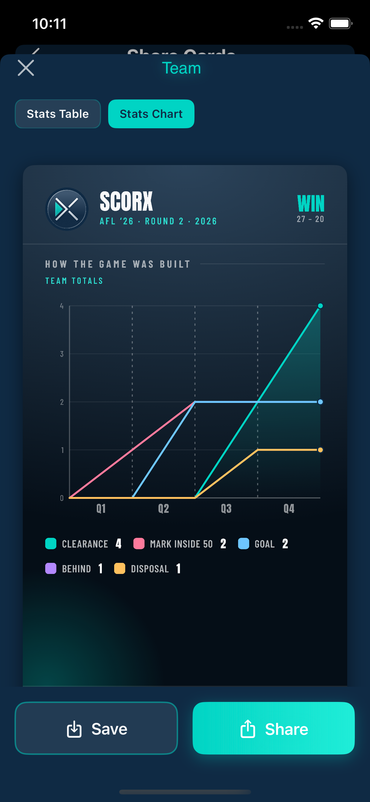
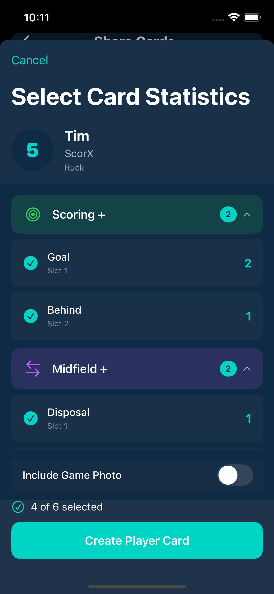

What each one actually looks like
Everything lives under Share Cards, one tap from the game you just finished.
One menu, every graphic
Share Cards is the hub. Set your team logo once and add the opposition's per game, then choose what to make: the result, the team's numbers, or a single player's game.
- Team Logos — your club crest, saved once in Team Management, on every graphic after that
- Game Results — Final Score Cards in Broadcast or Split Rail
- Stats Overview — Team, Attacking, Midfield and Defence, each as a table or a chart
- Players — a stat card for any player on the sheet

Final score graphics
ScorX Free
The result, in the format the sport actually uses. AFL shows 27 with the 4.3 underneath. Netball, rugby and soccer each show their own breakdown.
- Broadcast — big centred scoreline with both crests, built for a feed post
- Split Rail — the alternative layout when you want the photo to carry the image
- Add Game Photo — drop a shot from the day in behind the score
- Show Score Type Count — toggle the goals/behinds style breakdown on or off
- Competition and round labelled automatically from the game you set up

Player stat graphics
Choose the player, choose which stats go on the card, and ScorX builds it. Every number comes from what was recorded live — nothing is typed in twice.
- Pick the stats yourself, grouped by category, with slot ordering so the big number leads
- Card types — Scouting Report, Full Time, Holographic, Player of the Match and more
- Styles — Frosted, Dark or Light; Compact or Standard size
- ScorX or Team Colors — run the card in your own club's palette
- Optional player photo, game photo, and physical measurements (age, height, weight, wingspan) in SI or Imperial
One standard card style is free for everyone. The full style library, sticker format and custom colour themes are ScorX Premium.

Team stat graphics
ScorX Free
Two ways to post the team's game: the table for the people who want the numbers, the chart for the people who want the story.
- Stats Table — every tracked stat for the team, laid out and legible on a phone screen
- Stats Chart — "How the game was built", plotted period by period with a colour-coded legend
- Both available for team totals and for the Attacking, Midfield and Defence categories
- Result, round and season stamped across the header

Pick the stats that tell the story
A card with twelve numbers on it says nothing. ScorX lets you choose the four or five that actually made the game, per player, per card.
- Stats grouped the way the sport groups them — scoring, midfield, defensive
- Slot ordering decides what leads the card
- Player name, number, position and team pulled from the roster
- Toggle a game photo behind the card in one tap
